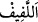

” birbirlerine karışmış halde çeşitli kabilelerden oluşan topluluklar demektir.
el-Kâmûs’ta şöyle der: “Hepinizi toplayıp bir araya getireceğiz” yâni, her kabileden
karışık bir şekilde bir araya toplanmış olarak demektir.”
et-Te’vîlâtü’n-Necmiyye’de şöyle der: “Yâni kâfirler onlarla birlikte azaptan
kurtuluruz ümidiyle mü’minlerin arasına karışırlar. Bunun üzerine Allah Teâlâ’nın:
‘‘Bugün ayrılın, ey mücrimler” (Yâsîn, 36/59) hitabıyla karşılaşırlar. Mü’minlerin
arasına karışmaları onlara bir fayda sağlamaz. Bilakis onlara “(İnsanların) bir
bölümü cennette, bir bölümü de çılgın alevli cehennemdedir.” (eş-Şûrâ, 42/7) denir.
Fakir (Bursevî) der ki: Bu böyledir. Çünkü şeklen karışmaları ve zâhiren irtibat
kurmaları kâfirlere ve münâfıklara fayda etmez. Zira, onlarla mü’minleri hâlis îtikad ve
sâlih amel bir araya getirmemiştir. Onların hâli, gemileri parçalanıp da yüzme
bilmeyenlerin iyi yüzme bilenlere tutunmasına benzer. Bu tutunmaları onlara fayda
vermez. Çünkü deniz derin, sâhil uzaktır. Nice iyi yüzücüler dahi kurtulamazken yüzme
bilmeyenler nasıl olur da kurtulur?
Sa‘dî der ki:
Bir deniz ki ucu bucağı yoktur
Yüzücünün gururu bir işe yaramaz
Bir hadiste şöyle buyrulmuştur: “Ameli kendisini geri bırakan kimseyi nesebi ileri
götüremez.”[152] Yâni kötü ameli ve sâlih amel konusundaki ihmalkârlığı kendisini
âhirette geri bırakan kişiye, dünya bakımından sahip olduğu neseb şerefi fayda etmez ve
bununla kusuru telâfi olmaz. Çünkü nesebi burada sona erer.
Görmez misin ki, ağaçtaki kuru dal onun kuru, geri kalanın ise yaş ve yeşil olması
yüzünden kesilir. Çünkü artık onunla yeşil ve taze dallar arasında bir alâka yoktur. Her
ne kadar o ağaca bağlı, ona mensub bir dal olsa da kuru olması sebebiyle kesilmesi
gerekir. Fayda sağlayan neseb, ancak takvâ bağıdır. Bu sebeple Hz. Peygamber (s.a.)
“Her takvâ sâhibi temiz kişi benim ehlimdir.”[153] buyurmuştur.
Ebû Leheb ve benzerleri gibi takvâ ve temiz olma sıfatlarını taşımayanlar onun
ehlinden değildir ve onun Allah Teâlâ’ya ulaşan bir yolu yoktur. Usûlü/asılları zâyi
ettikleri ve nakdi faydasız şeylere harcadıkları halde vusûle erdiklerini zanneden kavme
yazıklar olsun! Büyüklerden birine vâsıtasız olarak Allah Teâlâ’dan hediye takdim
edildi. O: Bunu ancak Muhammed (s.a.)’in elinden, yâni dosdoğru yoldan kabul ederim,
dedi. Sonra o yönden misliyle katlanmış olarak geldi. Bu, Allah’la irtibatın sıhhatinin
ancak vâsıtayla irtibatın sıhhatli olmasına bağlı olduğunun delilidir. O vâsıta da Hz.
Peygamber (s.a.)’dir. Hz. Peygamber (s.a.) ve şeriatı mihenk taşıdır. Mevhibeler ve
atıyyeler ona vurulur. Onun emrine muvafık gelirse kabul edilir, yoksa reddedilir. Çünkü
bunun hak kisvesine bürünmüş süslü bir şekilde şeytan ve nefis tarafından olmuş olması
da mümkündür. Bu yüzden mutlaka iyice ayrılması gerekir. Bu ise en zor işlerdendir. Ey
kardeşim Allah yolunda sebat ve vakardan ayrılma. Düşman seni hak yoldan çıkarıp da